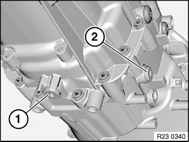
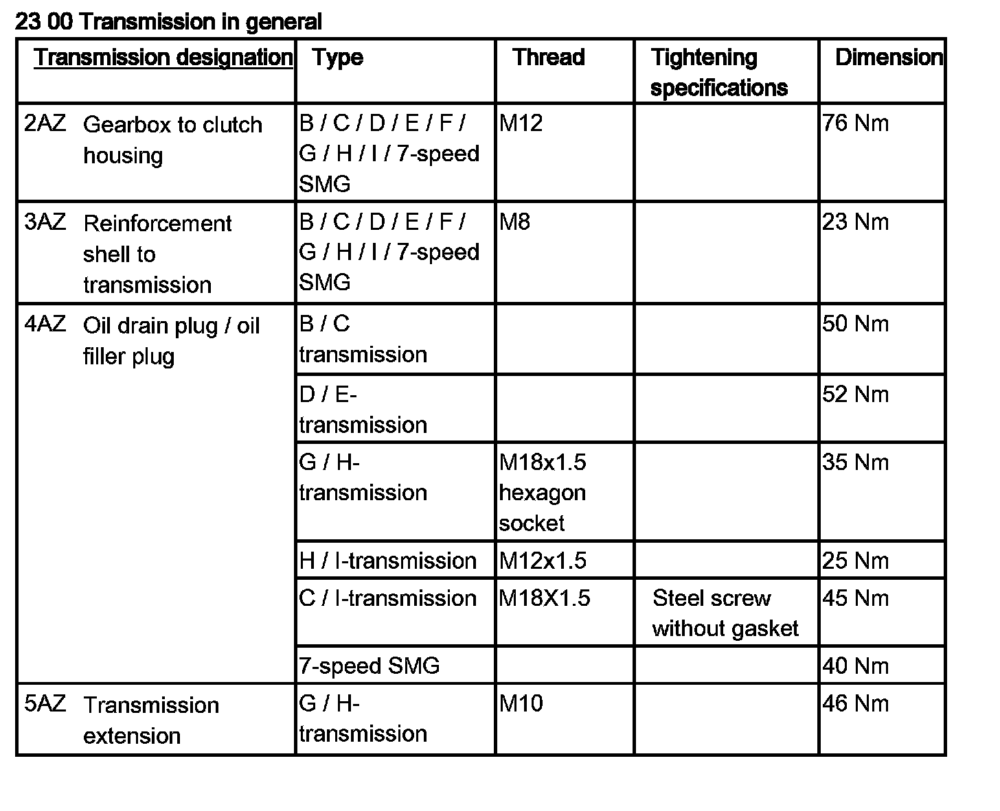
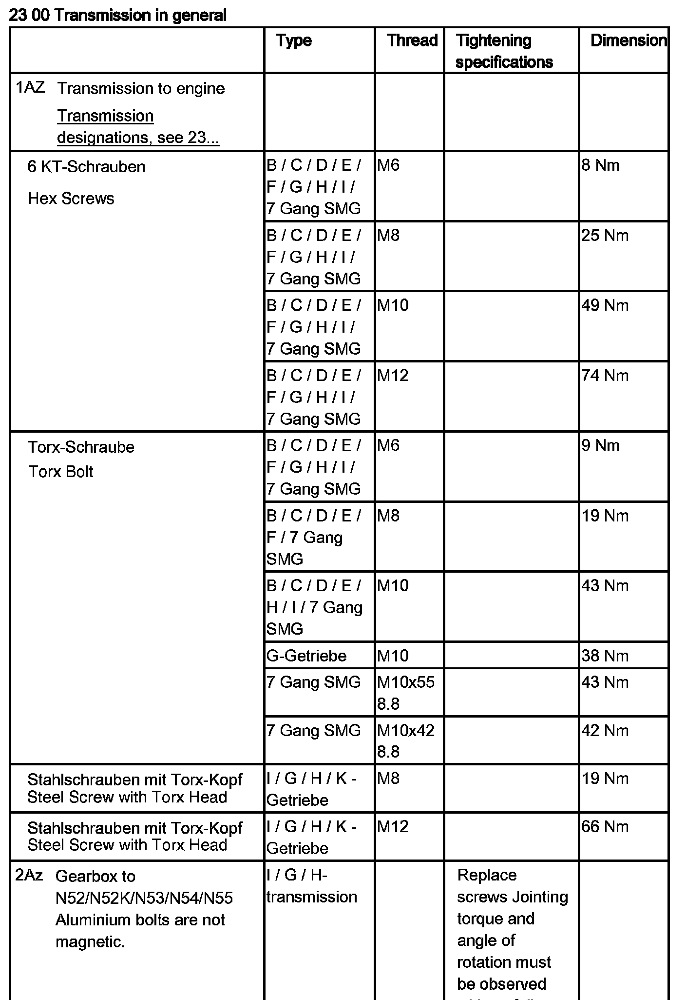

<!DOCTYPE html>
<html>
  <head>
    <title>Fluid - M/T: Service and Repair — 2011 BMW 128i Coupe (E82) L6-3.0L (N52K) Service Manual | Operation CHARM</title>
    <meta name='description' content="Detailed repair manual for the 2011 BMW 128i Coupe (E82) L6-3.0L (N52K).">
    <link rel='stylesheet' href="../style.css">
    <meta name='viewport' content='width=device-width, initial-scale=1.0' />
  </head>
  <body>
    <div class='theme-colors header'>
      <div class='branding'><b>Operation CHARM</b>: Car repair manuals for everyone.</div>
<div class=breadcrumbs><a class='breadcrumb-part' href="../">Home</a> <b>&gt;&gt;</b> <a class='breadcrumb-part' href="../BMW/">BMW</a> <b>&gt;&gt;</b> <a class='breadcrumb-part' href="../BMW/2011/">2011</a> <b>&gt;&gt;</b> <a class='breadcrumb-part' href="../index.html">128i Coupe (E82) L6-3.0L (N52K)</a> <b>&gt;&gt;</b> <a class='breadcrumb-part' href="0.html">Repair and Diagnosis</a> <b>&gt;&gt;</b> <a class='breadcrumb-part' href="0.html#Maintenance/">Maintenance</a> <b>&gt;&gt;</b> <a class='breadcrumb-part' href="0.html#Maintenance/Fluids/">Fluids</a> <b>&gt;&gt;</b> <a class='breadcrumb-part' href="137.html">Fluid - M/T</a> <b>&gt;&gt;</b> <a class='breadcrumb-part' href="8996.html">Service and Repair</a></div></div>
<div class="theme-colors floaty-message lemon-message">
  <b style="font-size: 1.5em; color: gold">Manuals through 2025 now available!</b>
  <br><br>
  Our trusted friends have launched a new website named LEMON, which has newer manuals. It also contains all the CHARM manuals.
  <br><br>
  LEMON is the spiritual successor to  CHARM, I recommend you try it!
  <br><br>
  Link: <a style='white-space: nowrap' href="../missing-page">lemon-manuals.la</a> or <a style='white-space: nowrap' href="../missing-page">lemon-manuals.org.ua</a>
  <br><br>
  (Some people have issue connecting. LEMON is investigating. For now, use Firefox or change your DNS server)
  <br><br>
  Or, hide this message: <a href="../missing-page">temporarily</a> or <a href="../missing-page">permanently</a>
</div>
<div class='main'>
<h1>Fluid - M/T: Service and Repair</h1><b>00 11 ... Draining/topping up gear oil in manual transmission</b><br><br><span class='indent-2'>&#09;</span><b>Note:</b><br><span class='indent-2'>&#09;</span>Gearbox must be at normal operating temperature.<br><br><span class='indent-2'>&#09;</span>Gear oil:<br><span class='indent-2'>&#09;</span>-<span class='indent-5'>&#09;</span>refer to BMW Service Operating <a href="0.html#Maintenance/Fluids/">Fluids</a>.<br><br><span class='indent-2'>&#09;</span>Filling capacities:<br><span class='indent-2'>&#09;</span>-<span class='indent-5'>&#09;</span>Refer to Technical Data.<br><br><div class='oxe-image'></div><br><br><br><br><span class='indent-2'>&#09;</span>Draining gear oil:<br><span class='indent-2'>&#09;</span>-<span class='indent-5'>&#09;</span>Release oil drain plug (1) and filler plug (2).<br><span class='indent-2'>&#09;</span>-<span class='indent-5'>&#09;</span>Clean oil drain plug (1) and screw in.<br><span class='indent-5'>&#09;</span>Tightening torque 23 00 4AZ.<br><br><span class='indent-2'>&#09;</span>Fill transmission with ATF.<br><span class='indent-2'>&#09;</span>-<span class='indent-5'>&#09;</span>Pour in gear oil until overflowing.<br><span class='indent-2'>&#09;</span>-<span class='indent-5'>&#09;</span>Tighten in filler screw (2).<br><span class='indent-5'>&#09;</span>Tightening torque: 23 00 4AZ.<br><br><div class='oxe-image'></div><br><br><br><h3>��:</h3><div class='oxe-image'></div><br><br><br></div>
<div class="theme-colors footer">
  <i>pro multis</i> · <a href="../about.html">About Operation CHARM</a>
</div>
<script src="../script.js"></script>
</body>
</html>
